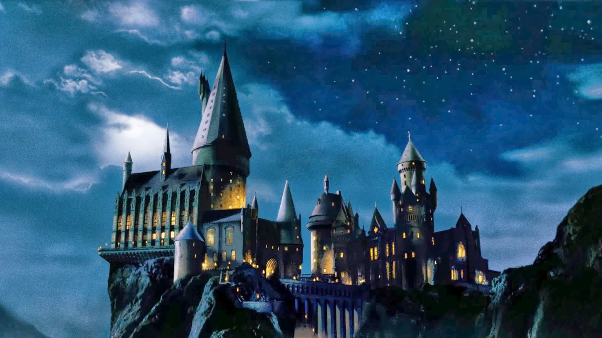
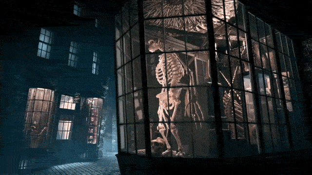

Welcome to the Wizarding World!
This is a website made for Muggles, to allow them to see how the magical world works.
Click the links above to learn more about specific topics.
Hogwarts School of Witchcraft and Wizardry
Magical children from all over the world dream of going to the prestegious school of Hogwarts. Hogwarts was founded by two wizards and two witches around 990 A.D. Their names were Godric Gryffindor, Helga Hufflepuff, Rowena Ravenclaw, and Salazar Slytherin. Each of the founders represent aspects of the personality they wanted to bring out in the students of Hogwarts. Gryffindor represents bravery, Hufflepuff represents kindness, Ravenclaw represents wisdom, and Slytherin represents ambition. Hogwarts is separated into four houses, each named after a founder, and each house has its own common room, dormitories, and Head of House.
Return to the top of the page.
Diagon Alley and Knockturn Alley
Diagon Alley

Diagon Alley is a cobblestoned wizarding alley and shopping area located in London, England behind a pub called the Leaky Cauldron. The words “Diagon” and “Alley” when pronounced together, produce the word “diagonally” which is most probably the origin of the name “Diagon Alley”. Inside the alley are many various types of shops, and it is usually where Hogwarts students buy all their supplies from. The alley is completely hidden from the Muggle world, even though it is right outside of its boundaries. It is very large in area and essentially the centre of wizarding London. Diagon Alley is accessible through the Leaky Cauldron, which is on Charing Cross Road in Muggle London, set next to a bookshop. As a result of numerous spells, Muggles who pass by the inn seem to be quite unaware of its existence. Experience a 3D tour of Diagon Alley!
Return to the top of the page.
- Broomstix
- Flourish and Blotts
- Madam Malkin's Robes for All Occasions
- Madam Primpernelle's Beautifying Potions
- Ollivanders
- Potage's Cauldron Shop
- Quality Quidditch Supplies
- Rosa Lee Teabag
- Scribbulus Writing Instruments
- Sugarplum's Sweets Shop
- TerrorTours
- The Daily Prophet
- Weasleys' Wizard Wheezes
- Whizz Hard Books
Knockturn Alley
Knockturn Alley is a shopping area off Diagon Alley in London. The name “Knockturn Alley” is a play on “nocturnally,” which is related with the night and darkness, hinting at its dark nature. It is filled with numerous shops about the Dark Arts, such as Borgin and Burkes, which sells objects that have curious, strong and, more often than not, dark magical properties. Unlike Diagon Alley, Knockturn Alley is not directly accessible from the Muggle world. Most people travel there through a passageway connected to Diagon Alley, or by apparation or Floo Powder.
Return to the top of the page.
The American Wizarding World
The Wizarding community in The United States of America differs greatly from the one located in Europe. Although there are more, here are some examples of the differences.
Return to the top of the page.
| Difference | North American Wizarding World | European Wizarding World |
|---|---|---|
| Currency | ‘Dragots’ | ‘Galleons’ |
| Word for non-magical people | ‘No-Maj’ | ‘Muggle’ |
| Relationships with Muggles | Restricted from speaking, unless neccessary, and/or forming relationships with Muggles. | Freedom of speaking to whomever, Muggle or not, and may form relationships with them. |
| Pure-Blood Prejudice | Less common, a rare occurence. | A considerably frequent occurence. |
| Wands | Need to have wand permits in order to use wands legally. | Do not need wand permits in order to use wands legally. |
Return to the top of the page.